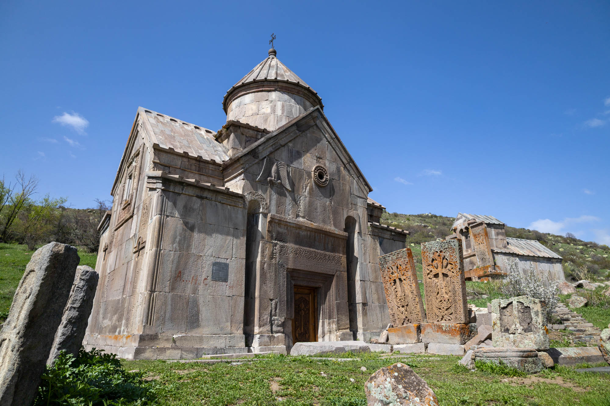
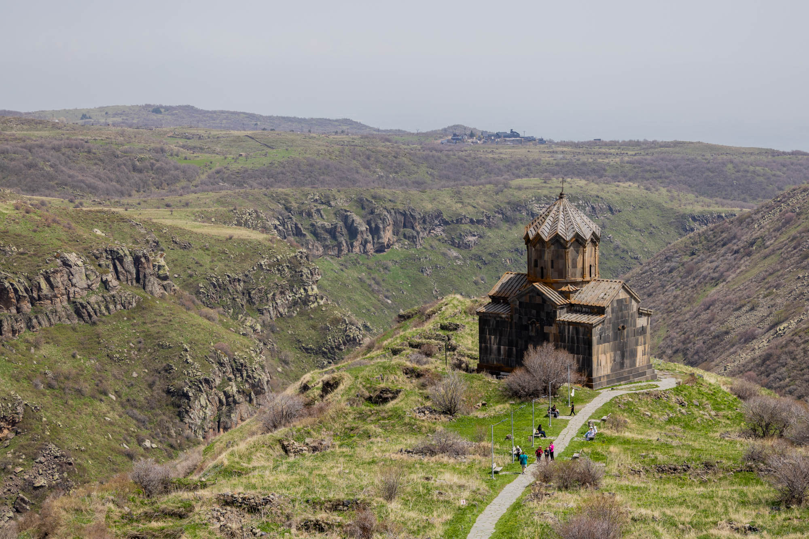

Noravank
Surrounded by red stone cliffs, this 13th-century Armenian monastery comprises two churches, Surb Karapet and Surb Astvatsatsin, the latter renowned for its distinctive exterior stone staircase that ascends to a second level.
Location: 39.684737, 45.232772
Tsakhats Kar
Set in the foothills above the Yeghegis River, this 10th-century grey tuff monastery is accessible only by four-wheel-drive or a four-kilometre hike. On arrival, you'll discover a natural spring, intricate animal carvings, and breathtaking panoramic views.
Location: 39.890268, 45.354014

Saint John the Baptist Church
The most modern church I visited—many centuries newer than any other—was completed in 2013 after seven years of construction. It was financed by Gagik Tsarukyan, a wealthy businessman, former boxer, and widely regarded as a corrupt politician. Strange fact: Belarusian President Alexander Lukashenko attended the church’s consecration.
Location: 40.275927, 44.631412
Approximately 40 painters and sculptors adorned both the interior and exterior of the church, crafting intricate carvings into the red-grey tuff stone. Their work features religious symbols, elements of nature, and inscriptions in the uniquely expressive Armenian alphabet.
Sevanavank Monastery
Perched with a view over Lake Sevan, this 9th-century monastery was originally situated on an island. However, due to the partial draining of the lake in the Stalin-era, it now rests on a peninsula. Just down the hill lies the constructivist-style lounge of the Sevan Writers' House, which also offers stunning views of the water.
Location: 40.563896, 45.010937
Goshavank Monastery
In the hills above Dilijan, this 12th–13th century monastery has been carefully restored and now features several glass cupolas—dome-like structures crowning the rooftops. It is also home to one of the oldest known Khachkars, an intricately carved Armenian stone cross dating back to 1291.
Location: 39.890268, 45.354014
Tegher Monastery
This early 13th-century Armenian monastery and church, constructed from dark grey tuff stone, sits on the slopes of Mount Aragats, the highest mountain in Armenia. From here, visitors can enjoy views of the Radio Optical Observatory ROT-54.
Location: 40.729919, 44.997436
Vahramashen Church
Also on the slopes of Mount Aragats, this 10th-century Armenian Apostolic Church was commissioned by Prince Vahram Pahlavuni to complement the nearby Amberd Fortress.
Location: 40.387733, 44.228553
